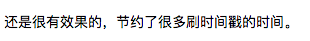
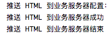

<!DOCTYPE html>


  


<html class="theme-next pisces use-motion" lang="zh-CN">
<head>
  <meta charset="UTF-8"/>
<meta http-equiv="X-UA-Compatible" content="IE=edge" />
<meta name="viewport" content="width=device-width, initial-scale=1, maximum-scale=2"/>
<meta name="theme-color" content="#222">


<meta http-equiv="Cache-Control" content="no-transform" />
<meta http-equiv="Cache-Control" content="no-siteapp" />


<link href="/lib/font-awesome/css/font-awesome.min.css?v=4.6.2" rel="stylesheet" type="text/css" />

<link href="/css/main.css?v=6.0.6" rel="stylesheet" type="text/css" />


  <link rel="apple-touch-icon" sizes="180x180" href="/favicon.ico?v=6.0.6">


  <link rel="icon" type="image/png" sizes="32x32" href="/favicon.ico?v=6.0.6">


  <link rel="icon" type="image/png" sizes="16x16" href="/favicon.ico?v=6.0.6">


  <link rel="mask-icon" href="/favicon.ico?v=6.0.6" color="#222">


<script type="text/javascript" id="hexo.configurations">
  var NexT = window.NexT || {};
  var CONFIG = {
    root: '/',
    scheme: 'Pisces',
    version: '6.0.6',
    sidebar: {"position":"left","display":"post","offset":12,"b2t":false,"scrollpercent":false,"onmobile":false},
    fancybox: false,
    fastclick: false,
    lazyload: false,
    tabs: true,
    motion: {"enable":true,"async":false,"transition":{"post_block":"fadeIn","post_header":"slideDownIn","post_body":"slideDownIn","coll_header":"slideLeftIn","sidebar":"slideUpIn"}},
    algolia: {
      applicationID: '',
      apiKey: '',
      indexName: '',
      hits: {"per_page":10},
      labels: {"input_placeholder":"Search for Posts","hits_empty":"We didn't find any results for the search: ${query}","hits_stats":"${hits} results found in ${time} ms"}
    }
  };
</script>


  


  <meta name="description" content="前后端分离，目前对于一个前端开发者来说，或者将其放在软件开发领域的历史背景下，都是再平常不过的一件事情了。17 年时进行了一个前后端彻底分离方案的实践，每次想起来这个方案时，总觉得它不够完美。现在将其写下来和大家交流，期望可以促进方案的后续完善。 邂逅自从接触前端开发，一共接触到了三种前端项目发布的方式：  通过 FileZilla 直接将前端资源文件上传到业务服务器 SSH 到业务服务器，通过">
<meta name="keywords" content="前端">
<meta property="og:type" content="article">
<meta property="og:title" content="告别是为了彼此变得更好---SPA 前后端彻底分离的探索之路">
<meta property="og:url" content="http://lizhiyao.github.io/2018/01/03/farewell/index.html">
<meta property="og:site_name" content="丁香园记">
<meta property="og:description" content="前后端分离，目前对于一个前端开发者来说，或者将其放在软件开发领域的历史背景下，都是再平常不过的一件事情了。17 年时进行了一个前后端彻底分离方案的实践，每次想起来这个方案时，总觉得它不够完美。现在将其写下来和大家交流，期望可以促进方案的后续完善。 邂逅自从接触前端开发，一共接触到了三种前端项目发布的方式：  通过 FileZilla 直接将前端资源文件上传到业务服务器 SSH 到业务服务器，通过">
<meta property="og:locale" content="zh-CN">
<meta property="og:image" content="http://lizhiyao.github.io/2018/01/03/farewell/Node.js%20中间层.png">
<meta property="og:image" content="http://lizhiyao.github.io/2018/01/03/farewell/HTML%20完全分离（非%20Node.js）.png">
<meta property="og:image" content="http://lizhiyao.github.io/2018/01/03/farewell/WX20180103-115152.png">
<meta property="og:image" content="http://lizhiyao.github.io/2018/01/03/farewell/WX20180103-113722.png">
<meta property="og:updated_time" content="2018-01-16T10:45:01.888Z">
<meta name="twitter:card" content="summary">
<meta name="twitter:title" content="告别是为了彼此变得更好---SPA 前后端彻底分离的探索之路">
<meta name="twitter:description" content="前后端分离，目前对于一个前端开发者来说，或者将其放在软件开发领域的历史背景下，都是再平常不过的一件事情了。17 年时进行了一个前后端彻底分离方案的实践，每次想起来这个方案时，总觉得它不够完美。现在将其写下来和大家交流，期望可以促进方案的后续完善。 邂逅自从接触前端开发，一共接触到了三种前端项目发布的方式：  通过 FileZilla 直接将前端资源文件上传到业务服务器 SSH 到业务服务器，通过">
<meta name="twitter:image" content="http://lizhiyao.github.io/2018/01/03/farewell/Node.js%20中间层.png">


  <link rel="canonical" href="http://lizhiyao.github.io/2018/01/03/farewell/"/>


<script type="text/javascript" id="page.configurations">
  CONFIG.page = {
    sidebar: "",
  };
</script>

  <title>告别是为了彼此变得更好---SPA 前后端彻底分离的探索之路 | 丁香园记</title>
  


<script async src="https://www.googletagmanager.com/gtag/js?id=UA-96917833-1"></script>
<script>
  window.dataLayer = window.dataLayer || [];
  function gtag(){dataLayer.push(arguments);}
  gtag('js', new Date());

  gtag('config', 'UA-96917833-1');
</script>


  <script type="text/javascript">
    var _hmt = _hmt || [];
    (function() {
      var hm = document.createElement("script");
      hm.src = "https://hm.baidu.com/hm.js?5476bfd46e559a87ee9508b21a534eb9";
      var s = document.getElementsByTagName("script")[0];
      s.parentNode.insertBefore(hm, s);
    })();
  </script>


  <noscript>
  <style type="text/css">
    .use-motion .motion-element,
    .use-motion .brand,
    .use-motion .menu-item,
    .sidebar-inner,
    .use-motion .post-block,
    .use-motion .pagination,
    .use-motion .comments,
    .use-motion .post-header,
    .use-motion .post-body,
    .use-motion .collection-title { opacity: initial; }

    .use-motion .logo,
    .use-motion .site-title,
    .use-motion .site-subtitle {
      opacity: initial;
      top: initial;
    }

    .use-motion {
      .logo-line-before i { left: initial; }
      .logo-line-after i { right: initial; }
    }
  </style>
</noscript>

</head>

<body itemscope itemtype="http://schema.org/WebPage" lang="zh-CN">

  
  
    
  

  <div class="container sidebar-position-left page-post-detail">
    <div class="headband"></div>

    <header id="header" class="header" itemscope itemtype="http://schema.org/WPHeader">
      <div class="header-inner"> 

<div class="site-brand-wrapper">
  <div class="site-meta ">
    

    <div class="custom-logo-site-title">
      <a href="/" class="brand" rel="start">
        <span class="logo-line-before"><i></i></span>
        <span class="site-title">丁香园记</span>
        <span class="logo-line-after"><i></i></span>
      </a>
    </div>
      
        <h1 class="site-subtitle" itemprop="description"></h1>
      
  </div>

  <div class="site-nav-toggle">
    <button aria-label="切换导航栏">
      <span class="btn-bar"></span>
      <span class="btn-bar"></span>
      <span class="btn-bar"></span>
    </button>
  </div>
</div>

<nav class="site-nav">
  

  
    <ul id="menu" class="menu">
      
        
        
          
  <li class="menu-item menu-item-home">
    <a href="/" rel="section">
      <i class="menu-item-icon fa fa-fw fa-home"></i> <br />首页</a>
</li>

      
        
        
          
  <li class="menu-item menu-item-about">
    <a href="/about/" rel="section">
      <i class="menu-item-icon fa fa-fw fa-user"></i> <br />关于</a>
</li>

      
        
        
          
  <li class="menu-item menu-item-tags">
    <a href="/tags/" rel="section">
      <i class="menu-item-icon fa fa-fw fa-tags"></i> <br />标签</a>
</li>

      
        
        
          
  <li class="menu-item menu-item-archives">
    <a href="/archives/" rel="section">
      <i class="menu-item-icon fa fa-fw fa-archive"></i> <br />归档</a>
</li>

      

      
        <li class="menu-item menu-item-search">
          
            <a href="javascript:;" class="popup-trigger">
          
            
              <i class="menu-item-icon fa fa-search fa-fw"></i> <br />搜索</a>
        </li>
      
    </ul>
  

  

  
    <div class="site-search">
      
  <div class="popup search-popup local-search-popup">
  <div class="local-search-header clearfix">
    <span class="search-icon">
      <i class="fa fa-search"></i>
    </span>
    <span class="popup-btn-close">
      <i class="fa fa-times-circle"></i>
    </span>
    <div class="local-search-input-wrapper">
      <input autocomplete="off"
             placeholder="搜索..." spellcheck="false"
             type="text" id="local-search-input">
    </div>
  </div>
  <div id="local-search-result"></div>
</div>


    </div>
  
</nav>


  


 </div>
    </header>

    
  
  
  
    
      
    
    <a href="https://github.com/lizhiyao" class="github-corner" target="_blank" title="Follow me on GitHub" aria-label="Follow me on GitHub"><svg width="80" height="80" viewBox="0 0 250 250" style="fill:#222; color:#fff; position: absolute; top: 0; border: 0; right: 0;" aria-hidden="true"><path d="M0,0 L115,115 L130,115 L142,142 L250,250 L250,0 Z"></path><path d="M128.3,109.0 C113.8,99.7 119.0,89.6 119.0,89.6 C122.0,82.7 120.5,78.6 120.5,78.6 C119.2,72.0 123.4,76.3 123.4,76.3 C127.3,80.9 125.5,87.3 125.5,87.3 C122.9,97.6 130.6,101.9 134.4,103.2" fill="currentColor" style="transform-origin: 130px 106px;" class="octo-arm"></path><path d="M115.0,115.0 C114.9,115.1 118.7,116.5 119.8,115.4 L133.7,101.6 C136.9,99.2 139.9,98.4 142.2,98.6 C133.8,88.0 127.5,74.4 143.8,58.0 C148.5,53.4 154.0,51.2 159.7,51.0 C160.3,49.4 163.2,43.6 171.4,40.1 C171.4,40.1 176.1,42.5 178.8,56.2 C183.1,58.6 187.2,61.8 190.9,65.4 C194.5,69.0 197.7,73.2 200.1,77.6 C213.8,80.2 216.3,84.9 216.3,84.9 C212.7,93.1 206.9,96.0 205.4,96.6 C205.1,102.4 203.0,107.8 198.3,112.5 C181.9,128.9 168.3,122.5 157.7,114.1 C157.9,116.9 156.7,120.9 152.7,124.9 L141.0,136.5 C139.8,137.7 141.6,141.9 141.8,141.8 Z" fill="currentColor" class="octo-body"></path></svg>
    
      </a>
    


    <main id="main" class="main">
      <div class="main-inner">
        <div class="content-wrap">
          
            

          
          <div id="content" class="content">
            

  <div id="posts" class="posts-expand">
    

  

  
  
  

  

  <article class="post post-type-normal" itemscope itemtype="http://schema.org/Article">
  
  
  
  <div class="post-block">
    <link itemprop="mainEntityOfPage" href="http://lizhiyao.github.io/2018/01/03/farewell/">

    <span hidden itemprop="author" itemscope itemtype="http://schema.org/Person">
      <meta itemprop="name" content="志遥">
      <meta itemprop="description" content="">
      <meta itemprop="image" content="/uploads/avatar.jpg">
    </span>

    <span hidden itemprop="publisher" itemscope itemtype="http://schema.org/Organization">
      <meta itemprop="name" content="丁香园记">
    </span>

    
      <header class="post-header">

        
        
          <h2 class="post-title" itemprop="name headline">告别是为了彼此变得更好---SPA 前后端彻底分离的探索之路</h2>
        

        <div class="post-meta">
          <span class="post-time">
            
              <span class="post-meta-item-icon">
                <i class="fa fa-calendar-o"></i>
              </span>
              
                <span class="post-meta-item-text">发表于</span>
              
              <time title="创建于" itemprop="dateCreated datePublished" datetime="2018-01-03T21:29:49+08:00">2018-01-03</time>
            

            
            

            
          </span>

          

          
            
              <span class="post-comments-count">
                <span class="post-meta-divider">|</span>
                <span class="post-meta-item-icon">
                  <i class="fa fa-comment-o"></i>
                </span>
                <a href="/2018/01/03/farewell/#comments" itemprop="discussionUrl">
                  <span class="post-meta-item-text">评论：</span> <span class="post-comments-count gitment-comments-count" data-xid="/2018/01/03/farewell/" itemprop="commentsCount"></span>
                </a>
              </span>
            
          

          
          
             <span id="/2018/01/03/farewell/" class="leancloud_visitors" data-flag-title="告别是为了彼此变得更好---SPA 前后端彻底分离的探索之路">
               <span class="post-meta-divider">|</span>
               <span class="post-meta-item-icon">
                 <i class="fa fa-eye"></i>
               </span>
               
                 <span class="post-meta-item-text">阅读次数：</span>
               
                 <span class="leancloud-visitors-count"></span>
             </span>
          

          

          

          

        </div>
      </header>
    

    
    
    
    <div class="post-body" itemprop="articleBody">

      
      

      
        <p>前后端分离，目前对于一个前端开发者来说，或者将其放在软件开发领域的历史背景下，都是再平常不过的一件事情了。17 年时进行了一个前后端彻底分离方案的实践，每次想起来这个方案时，总觉得它不够完美。现在将其写下来和大家交流，期望可以促进方案的后续完善。</p>
<h1 id="邂逅"><a href="#邂逅" class="headerlink" title="邂逅"></a>邂逅</h1><p>自从接触前端开发，一共接触到了三种前端项目发布的方式：</p>
<ol>
<li>通过 FileZilla 直接将前端资源文件上传到业务服务器</li>
<li>SSH 到业务服务器，通过 Git 更新前端项目代码，然后进行新版本资源的构建</li>
<li>将构建好的前端资源文件推送到 cdn </li>
</ol>
<p>刚加入丁香园前端团队时，前后端分离的 SPA 项目的实现方式是：前端和服务端项目是两个代码仓库，HTML 模板由服务端语言（JSP/PHP）输出，HTML 引用的前端资源是通过前端资源发布系统发布到 cdn 上。涉及到 cdn，就会面临 cdn 缓存的问题。解决 cdn 缓存问题的方案是传统的时间戳机制。具体操作流程是服务端提供一个更新时间戳的接口，当前端每次发布新版本后，去调用更新时间戳的接口。</p>
<p>基于时间戳机制的前端项目发布流程大致为：</p>
<ol>
<li>在发布系统进行项目发布</li>
<li>通过相关接口更新时间戳</li>
</ol>
<p>看上去这个流程很简单高效，对不对？让我们来根据实际情况来细化一下这个流程：</p>
<ol>
<li>登录发布系统</li>
<li>在发布系统点击对应项目的发布按钮</li>
<li>等待前端资源构建并发布成功</li>
<li>资源发布成功后，调用更新时间戳的接口</li>
<li>发布完成</li>
</ol>
<p>流程细化之后，我们可以把流程分为5步，平均算下来每次前端同学进行一次项目发布，大概需要3分钟。在等待发布系统构建资源的时候，前端同学可以并行的去做一些放松的事情，比如：去餐吧喝杯咖啡，上个厕所，随手修个 bug。放松之后，更新一下时间戳，新版本发布便大功告成。接下来便可以进入愉悦的新需求开发之旅了，一切都显得如此惬意。</p>
<p>去年的我，也是这样认为的。因为当时在负责的新版调查问卷（SPA）和 Insight（可以看做 n 个 SPA）等项目，大概平均每天发布一次，所以用来发布的时间成本还是能接受的。</p>
<p>16年年底时，加入了大众医学部，开始和伙伴们一起负责<a href="https://ask.dxy.com/ama/index" target="_blank" rel="noopener">来问丁香医生</a>等项目。项目依旧是前后端分离的 SPA，构建好的前端资源依旧是发布到 cdn，解决 cdn 缓存问题同样采用的是时间戳机制。一切都是熟悉的配方，熟悉的味道。当参与了一段时间的需求迭代后，我发现事情似乎没有想象的那么简单。</p>
<p>让我有这种感受的原因，主要有两点：</p>
<ol>
<li>更新时间戳的接口即使在内网，也是需要鉴权的。并不像调查问卷等项目，直接在浏览器访问一下更新时间戳的接口就可以了。鉴权的方式是需要微信扫码。</li>
<li>需求迭代速度谦虚一点说，很快。仅生产环境，几乎每天都要发布至少一次。</li>
</ol>
<p>此时细化的一次发布流程变为：</p>
<ol>
<li>登录发布系统</li>
<li>在发布系统点击对应项目的发布按钮</li>
<li>等待前端资源构建并发布成功</li>
<li>资源发布成功后，调用更新时间戳的接口（需要鉴权）</li>
<li>访问更新时间戳的页面，页面弹出鉴权二维码</li>
<li>发布者拿起手机</li>
<li>打开微信，点击扫一扫，扫描二维码</li>
<li>微信接收到同意授权的模板消息</li>
<li>点击模板消息进行授权，授权成功后进入更新时间戳页面</li>
<li>点击更新时间戳按钮</li>
<li>等待生效（服务端有缓存机制）</li>
<li>发布完成</li>
</ol>
<p>一次前端发布的时间，平均在7分钟左右。在实际工作中，需要在测试环境、（预发环境）、生产环境进行发布。从团队的角度来看，管理后台等项目也在采用这种发布方式。毛估一下，每周团队在项目发布上就需要花费 2 ~ 3 个小时((7min <em> 2 </em> 2 * 5)/ 60)。</p>
<p>此外，这种前后端分离的方式还有以下几个问题：</p>
<ul>
<li>HTML 模板开发效率较低。项目所使用的 HTML 文件需要前端同学写好后发给后端，后端再进行“套模板”，这种做法本身就有一个流程的复杂度。后端同学如果对 HTML 掌握的不熟练，那么需要前端同学去跟后端同学结对编程，来确保 HTML 的正确，此处有一个沟通成本。项目上线后，如果需要对 HTML 进行改动，需要前端先修改好 HTML，然后把 HTML 发给后端，后端再次进行“套模板”。后端同学修改好 HTML 模板文件后，可能不会因为这一个改动进行发版，需要跟随着后端项目的其他改动代码一起发版，此时对于前端、测试同学有一个等待的成本。</li>
<li>cdn 资源有一点点浪费。页面中所有前端资源是使用同一个时间戳，这意味着每次更新时间戳都会更新页面中的全部资源引用地址，从而当用户再次使用应用时，需要重新下载页面引用的所有资源。而前端的某个新版本，可能仅仅是需要更新部分资源文件即可。</li>
<li>加长了应用的响应时间。这一点同样是由上一点描述的时间戳机制导致的，重新下载“新”的资源而不是利用浏览器的缓存，必然会导致用户需要等待更长的时间。</li>
</ul>
<h1 id="念念不忘，必有回响"><a href="#念念不忘，必有回响" class="headerlink" title="念念不忘，必有回响"></a>念念不忘，必有回响</h1><p>为了解决上述问题，我设计了一个的方案：</p>
<p></p>
<p>方案说明：</p>
<ul>
<li>前端项目生产环境构建时，将文件名中加入 hash 值。</li>
<li>前端资源发布系统在资源构建成功后，将 index.html 同步到业务服务器（本着线上项目不做写操作的原则：会把 HTML 文件放到后端项目和Node项目目录之外的地方）。</li>
<li>在业务服务器上新增一个 Node 服务。该服务的作用之一为：收到浏览器端首页的请求时，将 index.html 返回。</li>
<li>当用户访问应用时，由运维将请求首页 HTML 的请求转给 Node 服务，其余业务接口保持原有方式不变。</li>
</ul>
<p>方案确定后，在团队小伙伴的配合下，该方案在一个流量较小的项目上线了。</p>
<h1 id="新的火花"><a href="#新的火花" class="headerlink" title="新的火花"></a>新的火花</h1><p>上述方案存在一个问题的：在原有的技术体系中，引入了 Node.js。本质上是在稳定的技术体系下，增加了技术复杂度。因此，在不增加技术复杂度的前提下，需要开始探索新的解决方案。在后端同学的配合下，新方案相比于引入 Node.js 方案改动如下：</p>
<p></p>
<ul>
<li>业务服务器给前端发布系统提供同步 HTML 模板文件的接口，前端发布系统每次成功构建前端资源后，调用该接口将模板文件同步给业务服务器。</li>
<li>业务服务器获取模板文件后，将文件内容存入数据库，持久化存储模板。在服务重启和用户请求时，服务端从数据库中获取模板。</li>
<li>服务端可以将从数据获取的模板放到缓存中，这样可以避免高频的读取数据库操作。对应的业务服务器需要监控数据库中的数据变化情况，以便于及时更新缓存中的模板资源。</li>
</ul>
<p>方案上线后，前端项目的发布流程变为：</p>
<ol>
<li>登录发布系统</li>
<li>在发布系统点击对应项目的发布按钮</li>
<li>等待前端资源构建并发布成功</li>
</ol>
<p>前端项目发布这件事，终于变成了点击一下发布按钮，整件事情就做好了。整个发布流程耗时变为不到一分钟。此外，当前端需要改变 HTML 模板时，也不再需要将文件发给后端同学，苦苦等待后端项目的发版。</p>
<p>该方案上线后，组内同学在周报中提及到的使用新方案后的感受为：</p>
<p></p>
<p>为了方便前端同学获取同步模板的进展，在发布系统中增加了同步过程的提醒：</p>
<p></p>
<h1 id="没有银弹"><a href="#没有银弹" class="headerlink" title="没有银弹"></a>没有银弹</h1><p>上述方案相比于 JSP/PHP 提供 HTML 模板存在一个问题，就是在前端在构建 HTML 时，（暂时）不能将应用初始化的数据放入 HTML 中。解决方案是服务端提供一个接口，在应用启动时去调用该接口获取初始化数据。</p>
<p>对于前端加载优化，整体上思路上是需要减少网络请求的，而此方案却在增加网络请求，这意味着页面加载时间会变长。但是综合利弊之后，还是决定采用这个方案。</p>
<p>最终方案上线后，其实心中已经做好了页面平均加载时间会变长的心理准备，但是有些意外的是，几天后去 mta 看数据发现全国范围内平均响应时间缩短了 0.2s 左右。为什么不升反降，目前我还不能得出一个准确的答案。猜测的一个原因是： hash 值的方案避免了用户进行不必要的资源更新。</p>
<h1 id="待完善"><a href="#待完善" class="headerlink" title="待完善"></a>待完善</h1><p>上述方案虽然做到了前端项目的一键发布，但是还不够称作为一个完善的解决方案。因为该方案只是解决了 SPA 类型项目的发布问题，对于之前“套模板”重 SEO 的项目而言，并不是很适用。（提到 2018 年的技术浪潮下，如何开发一个重 SEO 的网站这个话题，又可以写一篇文章了，其中的心路历程还是蛮坎坷的）</p>
<p>言归正传，在前端资源发布系统层面，该方案可以考虑去增加文件历史和发布回滚功能，以备不时只需。</p>
<p>这个方案是和业务线的服务端同学配合实现的，从公司层面来看，可以考虑的点是是否可以将这个方案做成一个通用的服务。</p>
<p>在和团队的交流时，相学长提出可以将 HTML 引用的资源抽象成 JSON Tree 进行存储。之前看过一些类似的解决方案，不过目前自己还是更倾向于分开的“更彻底”，这样可以让服务端同学更安心的提供接口。</p>
<h1 id="写在最后"><a href="#写在最后" class="headerlink" title="写在最后"></a>写在最后</h1><p>由于水平有限，欢迎大家对此方案提出建议。非常期待。</p>

      
    </div>

    

    
    
    

    
      <div>
        <div id="wechat_subscriber" style="display: block; padding: 10px 0; margin: 20px auto; width: 100%; text-align: center">
    
    <div>微信扫一扫，我在丁香园记公众号等你</div>
</div>

      </div>
    

    

    

    <footer class="post-footer">
      
        <div class="post-tags">
          
            <a href="/tags/前端/" rel="tag"># 前端</a>
          
        </div>
      

      
      
      

      
        <div class="post-nav">
          <div class="post-nav-next post-nav-item">
            
              <a href="/2018/01/02/loading-speed-optimization/" rel="next" title="初级前端项目加载速度优化">
                <i class="fa fa-chevron-left"></i> 初级前端项目加载速度优化
              </a>
            
          </div>

          <span class="post-nav-divider"></span>

          <div class="post-nav-prev post-nav-item">
            
              <a href="/2018/01/05/mixins-considered-harmful/" rel="prev" title="Mixins 被认为是有害的">
                Mixins 被认为是有害的 <i class="fa fa-chevron-right"></i>
              </a>
            
          </div>
        </div>
      

      
      
    </footer>
  </div>
  
  
  
  </article>


    <div class="post-spread">
      
    </div>
  </div>


          </div>
          

  
    <div class="comments" id="comments">
      
        <div id="gitment-container"></div>
      
    </div>

  


        </div>
        
          
  
  <div class="sidebar-toggle">
    <div class="sidebar-toggle-line-wrap">
      <span class="sidebar-toggle-line sidebar-toggle-line-first"></span>
      <span class="sidebar-toggle-line sidebar-toggle-line-middle"></span>
      <span class="sidebar-toggle-line sidebar-toggle-line-last"></span>
    </div>
  </div>

  <aside id="sidebar" class="sidebar">
    
    <div class="sidebar-inner">

      

      
        <ul class="sidebar-nav motion-element">
          <li class="sidebar-nav-toc sidebar-nav-active" data-target="post-toc-wrap">
            文章目录
          </li>
          <li class="sidebar-nav-overview" data-target="site-overview-wrap">
            站点概览
          </li>
        </ul>
      

      <section class="site-overview-wrap sidebar-panel">
        <div class="site-overview">
          <div class="site-author motion-element" itemprop="author" itemscope itemtype="http://schema.org/Person">
            
              
            
              <p class="site-author-name" itemprop="name">志遥</p>
              <p class="site-description motion-element" itemprop="description">Find what u really love, and let it kill U ~</p>
          </div>

          
            <nav class="site-state motion-element">
              
                <div class="site-state-item site-state-posts">
                
                  <a href="/archives/">
                
                    <span class="site-state-item-count">82</span>
                    <span class="site-state-item-name">日志</span>
                  </a>
                </div>
              

              

              
                
                
                <div class="site-state-item site-state-tags">
                  <a href="/tags/index.html">
                    
                    
                      
                    
                      
                    
                      
                    
                      
                    
                      
                    
                      
                    
                      
                    
                      
                    
                      
                    
                      
                    
                      
                    
                      
                    
                      
                    
                      
                    
                      
                    
                      
                    
                      
                    
                      
                    
                      
                    
                      
                    
                      
                    
                      
                    
                      
                    
                      
                    
                      
                    
                      
                    
                      
                    
                      
                    
                      
                    
                      
                    
                      
                    
                      
                    
                      
                    
                      
                    
                      
                    
                      
                    
                      
                    
                      
                    
                      
                    
                      
                    
                      
                    
                      
                    
                      
                    
                      
                    
                    <span class="site-state-item-count">44</span>
                    <span class="site-state-item-name">标签</span>
                  </a>
                </div>
              
            </nav>
          

          

          
            <div class="links-of-author motion-element">
              
                <span class="links-of-author-item">
                  <a href="https://github.com/lizhiyao" target="_blank" title="GitHub" rel="external nofollow"><i class="fa fa-fw fa-github"></i>GitHub</a>
                  
                </span>
              
                <span class="links-of-author-item">
                  <a href="https://www.instagram.com/_lizhiyao/" target="_blank" title="Instagram" rel="external nofollow"><i class="fa fa-fw fa-instagram"></i>Instagram</a>
                  
                </span>
              
                <span class="links-of-author-item">
                  <a href="mailto:dancerlzy@gmail.com" target="_blank" title="E-Mail" rel="external nofollow"><i class="fa fa-fw fa-envelope"></i>E-Mail</a>
                  
                </span>
              
                <span class="links-of-author-item">
                  <a href="https://www.zhihu.com/people/dancerlzy/" target="_blank" title="知乎" rel="external nofollow"><i class="fa fa-fw fa-globe"></i>知乎</a>
                  
                </span>
              
                <span class="links-of-author-item">
                  <a href="https://juejin.im/user/57b15330c4c971005487322f" target="_blank" title="掘金" rel="external nofollow"><i class="fa fa-fw fa-globe"></i>掘金</a>
                  
                </span>
              
            </div>
          

          
          

          
          

          
            
          
          

        </div>
      </section>

      
      <!--noindex-->
        <section class="post-toc-wrap motion-element sidebar-panel sidebar-panel-active">
          <div class="post-toc">

            
              
            

            
              <div class="post-toc-content"><ol class="nav"><li class="nav-item nav-level-1"><a class="nav-link" href="#邂逅"><span class="nav-number">1.</span> <span class="nav-text">邂逅</span></a></li><li class="nav-item nav-level-1"><a class="nav-link" href="#念念不忘，必有回响"><span class="nav-number">2.</span> <span class="nav-text">念念不忘，必有回响</span></a></li><li class="nav-item nav-level-1"><a class="nav-link" href="#新的火花"><span class="nav-number">3.</span> <span class="nav-text">新的火花</span></a></li><li class="nav-item nav-level-1"><a class="nav-link" href="#没有银弹"><span class="nav-number">4.</span> <span class="nav-text">没有银弹</span></a></li><li class="nav-item nav-level-1"><a class="nav-link" href="#待完善"><span class="nav-number">5.</span> <span class="nav-text">待完善</span></a></li><li class="nav-item nav-level-1"><a class="nav-link" href="#写在最后"><span class="nav-number">6.</span> <span class="nav-text">写在最后</span></a></li></ol></div>
            

          </div>
        </section>
      <!--/noindex-->
      

      

    </div>
  </aside>


        
      </div>
    </main>

    <footer id="footer" class="footer">
      <div class="footer-inner">
        <div class="copyright">&copy; 2015 &mdash; <span itemprop="copyrightYear">2019</span>
  <span class="with-love" id="animate"> 
    <i class="fa fa-user"></i>
  </span>
  <span class="author" itemprop="copyrightHolder">志遥</span>

  

  
</div>


  


  <div class="powered-by">由 <a class="theme-link" target="_blank" rel="external nofollow" href="https://hexo.io">Hexo</a> 强力驱动</div>


  <span class="post-meta-divider">|</span>


  <div class="theme-info">主题 &mdash; <a class="theme-link" target="_blank" rel="external nofollow" href="https://github.com/theme-next/hexo-theme-next">NexT.Pisces</a></div>


        


        
      </div>
    </footer>

    
      <div class="back-to-top">
        <i class="fa fa-arrow-up"></i>
        
      </div>
    

    

  </div>

  

<script type="text/javascript">
  if (Object.prototype.toString.call(window.Promise) !== '[object Function]') {
    window.Promise = null;
  }
</script>


  
  
    <script type="text/javascript" src="/lib/jquery/index.js?v=2.1.3"></script>
  

  
  
    <script type="text/javascript" src="/lib/velocity/velocity.min.js?v=1.2.1"></script>
  

  
  
    <script type="text/javascript" src="/lib/velocity/velocity.ui.min.js?v=1.2.1"></script>
  


  


  <script type="text/javascript" src="/js/src/utils.js?v=6.0.6"></script>

  <script type="text/javascript" src="/js/src/motion.js?v=6.0.6"></script>


  
  


  <script type="text/javascript" src="/js/src/affix.js?v=6.0.6"></script>

  <script type="text/javascript" src="/js/src/schemes/pisces.js?v=6.0.6"></script>


  
  <script type="text/javascript" src="/js/src/scrollspy.js?v=6.0.6"></script>
<script type="text/javascript" src="/js/src/post-details.js?v=6.0.6"></script>


  


  <script type="text/javascript" src="/js/src/bootstrap.js?v=6.0.6"></script>


  


	


  


  


  

  <script type="text/javascript">
    // Popup Window;
    var isfetched = false;
    var isXml = true;
    // Search DB path;
    var search_path = "search.xml";
    if (search_path.length === 0) {
      search_path = "search.xml";
    } else if (/json$/i.test(search_path)) {
      isXml = false;
    }
    var path = "/" + search_path;
    // monitor main search box;

    var onPopupClose = function (e) {
      $('.popup').hide();
      $('#local-search-input').val('');
      $('.search-result-list').remove();
      $('#no-result').remove();
      $(".local-search-pop-overlay").remove();
      $('body').css('overflow', '');
    }

    function proceedsearch() {
      $("body")
        .append('<div class="search-popup-overlay local-search-pop-overlay"></div>')
        .css('overflow', 'hidden');
      $('.search-popup-overlay').click(onPopupClose);
      $('.popup').toggle();
      var $localSearchInput = $('#local-search-input');
      $localSearchInput.attr("autocapitalize", "none");
      $localSearchInput.attr("autocorrect", "off");
      $localSearchInput.focus();
    }

    // search function;
    var searchFunc = function(path, search_id, content_id) {
      'use strict';

      // start loading animation
      $("body")
        .append('<div class="search-popup-overlay local-search-pop-overlay">' +
          '<div id="search-loading-icon">' +
          '<i class="fa fa-spinner fa-pulse fa-5x fa-fw"></i>' +
          '</div>' +
          '</div>')
        .css('overflow', 'hidden');
      $("#search-loading-icon").css('margin', '20% auto 0 auto').css('text-align', 'center');

      

      $.ajax({
        url: path,
        dataType: isXml ? "xml" : "json",
        async: true,
        success: function(res) {
          // get the contents from search data
          isfetched = true;
          $('.popup').detach().appendTo('.header-inner');
          var datas = isXml ? $("entry", res).map(function() {
            return {
              title: $("title", this).text(),
              content: $("content",this).text(),
              url: $("url" , this).text()
            };
          }).get() : res;
          var input = document.getElementById(search_id);
          var resultContent = document.getElementById(content_id);
          var inputEventFunction = function() {
            var searchText = input.value.trim().toLowerCase();
            var keywords = searchText.split(/[\s\-]+/);
            if (keywords.length > 1) {
              keywords.push(searchText);
            }
            var resultItems = [];
            if (searchText.length > 0) {
              // perform local searching
              datas.forEach(function(data) {
                var isMatch = false;
                var hitCount = 0;
                var searchTextCount = 0;
                var title = data.title.trim();
                var titleInLowerCase = title.toLowerCase();
                var content = data.content.trim().replace(/<[^>]+>/g,"");
                
                var contentInLowerCase = content.toLowerCase();
                var articleUrl = decodeURIComponent(data.url);
                var indexOfTitle = [];
                var indexOfContent = [];
                // only match articles with not empty titles
                if(title != '') {
                  keywords.forEach(function(keyword) {
                    function getIndexByWord(word, text, caseSensitive) {
                      var wordLen = word.length;
                      if (wordLen === 0) {
                        return [];
                      }
                      var startPosition = 0, position = [], index = [];
                      if (!caseSensitive) {
                        text = text.toLowerCase();
                        word = word.toLowerCase();
                      }
                      while ((position = text.indexOf(word, startPosition)) > -1) {
                        index.push({position: position, word: word});
                        startPosition = position + wordLen;
                      }
                      return index;
                    }

                    indexOfTitle = indexOfTitle.concat(getIndexByWord(keyword, titleInLowerCase, false));
                    indexOfContent = indexOfContent.concat(getIndexByWord(keyword, contentInLowerCase, false));
                  });
                  if (indexOfTitle.length > 0 || indexOfContent.length > 0) {
                    isMatch = true;
                    hitCount = indexOfTitle.length + indexOfContent.length;
                  }
                }

                // show search results

                if (isMatch) {
                  // sort index by position of keyword

                  [indexOfTitle, indexOfContent].forEach(function (index) {
                    index.sort(function (itemLeft, itemRight) {
                      if (itemRight.position !== itemLeft.position) {
                        return itemRight.position - itemLeft.position;
                      } else {
                        return itemLeft.word.length - itemRight.word.length;
                      }
                    });
                  });

                  // merge hits into slices

                  function mergeIntoSlice(text, start, end, index) {
                    var item = index[index.length - 1];
                    var position = item.position;
                    var word = item.word;
                    var hits = [];
                    var searchTextCountInSlice = 0;
                    while (position + word.length <= end && index.length != 0) {
                      if (word === searchText) {
                        searchTextCountInSlice++;
                      }
                      hits.push({position: position, length: word.length});
                      var wordEnd = position + word.length;

                      // move to next position of hit

                      index.pop();
                      while (index.length != 0) {
                        item = index[index.length - 1];
                        position = item.position;
                        word = item.word;
                        if (wordEnd > position) {
                          index.pop();
                        } else {
                          break;
                        }
                      }
                    }
                    searchTextCount += searchTextCountInSlice;
                    return {
                      hits: hits,
                      start: start,
                      end: end,
                      searchTextCount: searchTextCountInSlice
                    };
                  }

                  var slicesOfTitle = [];
                  if (indexOfTitle.length != 0) {
                    slicesOfTitle.push(mergeIntoSlice(title, 0, title.length, indexOfTitle));
                  }

                  var slicesOfContent = [];
                  while (indexOfContent.length != 0) {
                    var item = indexOfContent[indexOfContent.length - 1];
                    var position = item.position;
                    var word = item.word;
                    // cut out 100 characters
                    var start = position - 20;
                    var end = position + 80;
                    if(start < 0){
                      start = 0;
                    }
                    if (end < position + word.length) {
                      end = position + word.length;
                    }
                    if(end > content.length){
                      end = content.length;
                    }
                    slicesOfContent.push(mergeIntoSlice(content, start, end, indexOfContent));
                  }

                  // sort slices in content by search text's count and hits' count

                  slicesOfContent.sort(function (sliceLeft, sliceRight) {
                    if (sliceLeft.searchTextCount !== sliceRight.searchTextCount) {
                      return sliceRight.searchTextCount - sliceLeft.searchTextCount;
                    } else if (sliceLeft.hits.length !== sliceRight.hits.length) {
                      return sliceRight.hits.length - sliceLeft.hits.length;
                    } else {
                      return sliceLeft.start - sliceRight.start;
                    }
                  });

                  // select top N slices in content

                  var upperBound = parseInt('-1');
                  if (upperBound >= 0) {
                    slicesOfContent = slicesOfContent.slice(0, upperBound);
                  }

                  // highlight title and content

                  function highlightKeyword(text, slice) {
                    var result = '';
                    var prevEnd = slice.start;
                    slice.hits.forEach(function (hit) {
                      result += text.substring(prevEnd, hit.position);
                      var end = hit.position + hit.length;
                      result += '<b class="search-keyword">' + text.substring(hit.position, end) + '</b>';
                      prevEnd = end;
                    });
                    result += text.substring(prevEnd, slice.end);
                    return result;
                  }

                  var resultItem = '';

                  if (slicesOfTitle.length != 0) {
                    resultItem += "<li><a href='" + articleUrl + "' class='search-result-title'>" + highlightKeyword(title, slicesOfTitle[0]) + "</a>";
                  } else {
                    resultItem += "<li><a href='" + articleUrl + "' class='search-result-title'>" + title + "</a>";
                  }

                  slicesOfContent.forEach(function (slice) {
                    resultItem += "<a href='" + articleUrl + "'>" +
                      "<p class=\"search-result\">" + highlightKeyword(content, slice) +
                      "...</p>" + "</a>";
                  });

                  resultItem += "</li>";
                  resultItems.push({
                    item: resultItem,
                    searchTextCount: searchTextCount,
                    hitCount: hitCount,
                    id: resultItems.length
                  });
                }
              })
            };
            if (keywords.length === 1 && keywords[0] === "") {
              resultContent.innerHTML = '<div id="no-result"><i class="fa fa-search fa-5x" /></div>'
            } else if (resultItems.length === 0) {
              resultContent.innerHTML = '<div id="no-result"><i class="fa fa-frown-o fa-5x" /></div>'
            } else {
              resultItems.sort(function (resultLeft, resultRight) {
                if (resultLeft.searchTextCount !== resultRight.searchTextCount) {
                  return resultRight.searchTextCount - resultLeft.searchTextCount;
                } else if (resultLeft.hitCount !== resultRight.hitCount) {
                  return resultRight.hitCount - resultLeft.hitCount;
                } else {
                  return resultRight.id - resultLeft.id;
                }
              });
              var searchResultList = '<ul class=\"search-result-list\">';
              resultItems.forEach(function (result) {
                searchResultList += result.item;
              })
              searchResultList += "</ul>";
              resultContent.innerHTML = searchResultList;
            }
          }

          if ('auto' === 'auto') {
            input.addEventListener('input', inputEventFunction);
          } else {
            $('.search-icon').click(inputEventFunction);
            input.addEventListener('keypress', function (event) {
              if (event.keyCode === 13) {
                inputEventFunction();
              }
            });
          }

          // remove loading animation
          $(".local-search-pop-overlay").remove();
          $('body').css('overflow', '');

          proceedsearch();
        }
      });
    }

    // handle and trigger popup window;
    $('.popup-trigger').click(function(e) {
      e.stopPropagation();
      if (isfetched === false) {
        searchFunc(path, 'local-search-input', 'local-search-result');
      } else {
        proceedsearch();
      };
    });

    $('.popup-btn-close').click(onPopupClose);
    $('.popup').click(function(e){
      e.stopPropagation();
    });
    $(document).on('keyup', function (event) {
      var shouldDismissSearchPopup = event.which === 27 &&
        $('.search-popup').is(':visible');
      if (shouldDismissSearchPopup) {
        onPopupClose();
      }
    });
  </script>


  

  
  <script src="https://cdn1.lncld.net/static/js/av-core-mini-0.6.4.js"></script>
  <script>AV.initialize("G3UH8HdORUYIKeHXHP6J4lEM-gzGzoHsz", "PYiTH8lrUw7uQJ4Fm83lfIEA");</script>
  <script>
    function showTime(Counter) {
      var query = new AV.Query(Counter);
      var entries = [];
      var $visitors = $(".leancloud_visitors");

      $visitors.each(function () {
        entries.push( $(this).attr("id").trim() );
      });

      query.containedIn('url', entries);
      query.find()
        .done(function (results) {
          var COUNT_CONTAINER_REF = '.leancloud-visitors-count';

          if (results.length === 0) {
            $visitors.find(COUNT_CONTAINER_REF).text(0);
            return;
          }

          for (var i = 0; i < results.length; i++) {
            var item = results[i];
            var url = item.get('url');
            var time = item.get('time');
            var element = document.getElementById(url);

            $(element).find(COUNT_CONTAINER_REF).text(time);
          }
          for(var i = 0; i < entries.length; i++) {
            var url = entries[i];
            var element = document.getElementById(url);
            var countSpan = $(element).find(COUNT_CONTAINER_REF);
            if( countSpan.text() == '') {
              countSpan.text(0);
            }
          }
        })
        .fail(function (object, error) {
          console.log("Error: " + error.code + " " + error.message);
        });
    }

    function addCount(Counter) {
      var $visitors = $(".leancloud_visitors");
      var url = $visitors.attr('id').trim();
      var title = $visitors.attr('data-flag-title').trim();
      var query = new AV.Query(Counter);

      query.equalTo("url", url);
      query.find({
        success: function(results) {
          if (results.length > 0) {
            var counter = results[0];
            counter.fetchWhenSave(true);
            counter.increment("time");
            
            counter.save(null, {
              success: function(counter) {
                
                  var $element = $(document.getElementById(url));
                  $element.find('.leancloud-visitors-count').text(counter.get('time'));
                
              },
              error: function(counter, error) {
                console.log('Failed to save Visitor num, with error message: ' + error.message);
              }
            });
          } else {
            
              var $element = $(document.getElementById(url));
              $element.find('.leancloud-visitors-count').text('Counter not initialized! See more at console err msg.');
              console.error('ATTENTION! LeanCloud counter has security bug, see here how to solve it: https://github.com/theme-next/hexo-leancloud-counter-security. \n But you also can use LeanCloud without security, by set \'security\' option to \'false\'.');
            
          }
        },
        error: function(error) {
          console.log('Error:' + error.code + " " + error.message);
        }
      });
    }

    $(function() {
      var Counter = AV.Object.extend("Counter");
      if ($('.leancloud_visitors').length == 1) {
        addCount(Counter);
      } else if ($('.post-title-link').length > 1) {
        showTime(Counter);
      }
    });
  </script>


  

  
<script>
(function(){
    var bp = document.createElement('script');
    var curProtocol = window.location.protocol.split(':')[0];
    if (curProtocol === 'https') {
        bp.src = 'https://zz.bdstatic.com/linksubmit/push.js';        
    }
    else {
        bp.src = 'http://push.zhanzhang.baidu.com/push.js';
    }
    var s = document.getElementsByTagName("script")[0];
    s.parentNode.insertBefore(bp, s);
})();
</script>


  

  
  

  

  

  

  

</body>
</html>
